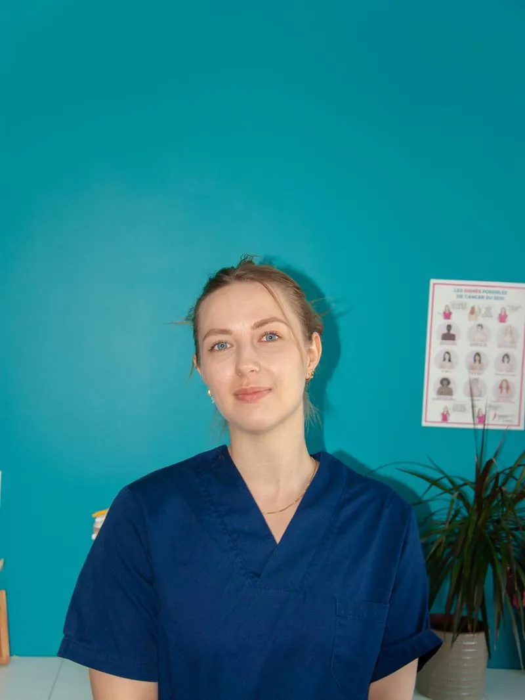

« Je prends le temps de comprendre votre douleur avant d'agir. Parce qu'une bonne prise en charge commence par une bonne écoute. »
Ostéopathe D.O. à Meudon, j'ai choisi de me spécialiser en santé de la femme et périnatalité : règles douloureuses, endométriose, douleurs pelviennes, grossesse, post-partum, périménopause.
Mon D.U. de prise en charge de la douleur nourrit directement cette pratique : comprendre un mécanisme douloureux avant de le traiter change tout, surtout quand la douleur dure depuis des années. Je veille à comprendre votre situation avant d'agir — et à adapter chaque soin à vos besoins.
Je reçois également hommes, enfants, nourrissons et personnes âgées pour l'ensemble des motifs ostéopathiques courants.

Diplômes nationaux et universitaires
Diplôme d'Ostéopathe D.O.
Institut Dauphine d'Ostéopathie (IDO)
D.U. Formation des professionnels de santé à la prise en charge de la douleur
Université Paris Cité – AP-HP Nord
Autres formations
Drainage Lymphatique
Santéstim
Ostéopathie périnatale : suivi de grossesse et préparation à l'accouchement
CFPCO
Prise en charge des névralgies cervico-brachiales
CFPCO
Formation pédiatrique
Ygy For You
Je travaille selon une démarche evidence-based : je m'appuie sur les données scientifiques disponibles, et je vous dis aussi clairement ce que l'ostéopathie ne peut pas faire. C'est particulièrement important en santé de la femme, où les promesses excessives sont fréquentes.
Concrètement, l'ostéopathie ne traite pas la cause d'une endométriose et ne remplace aucun suivi gynécologique. En revanche, elle agit sur les tensions, les compensations posturales et la douleur qui s'y associent — et cela peut changer beaucoup de choses au quotidien.
Techniques utilisées
Le choix des techniques dépend de vous, de votre motif et de vos préférences. Rien n'est imposé, et le « craquement » n'est jamais obligatoire.
L'ostéopathie donne ses meilleurs résultats quand elle s'inscrit dans une prise en charge globale. Je travaille en lien avec des gynécologues, sages-femmes, médecins généralistes, kinésithérapeutes et d'autres professionnels de santé du secteur.
Si votre situation relève d'abord d'un autre professionnel, je vous le dirai et je vous orienterai.
Vous êtes professionnel de santé et souhaitez échanger sur un suivi commun ? Écrivez-moi à dimeglio.osteo@gmail.com.
Je pratique une ostéopathie douce et adaptée — le craquement n'est ni systématique, ni indispensable. J'adapte mes techniques à chaque patient et à chaque situation.
Je travaille en collaboration avec d'autres professionnels de santé — médecins, kinésithérapeutes, sages-femmes, gynécologues — pour vous offrir une prise en charge coordonnée et cohérente.
Endo Île-de-France est un réseau ville-hôpital d'Île-de-France dédié à la prise en charge pluridisciplinaire de l'endométriose. Il réunit des professionnels de santé — médecins, gynécologues, ostéopathes, kinésithérapeutes, psychologues — qui travaillent ensemble pour accompagner les patientes.
En tant que membre de ce réseau, je collabore avec ces différents professionnels de santé pour vous offrir un suivi global, coordonné et adapté à votre parcours.
Lundi au samedi
9h00 – 19h30
Environ
45 minutes
Pris en charge par
la plupart des mutuelles
Prenez rendez-vous en quelques secondes sur Doctolib.
Prendre RDV en ligne